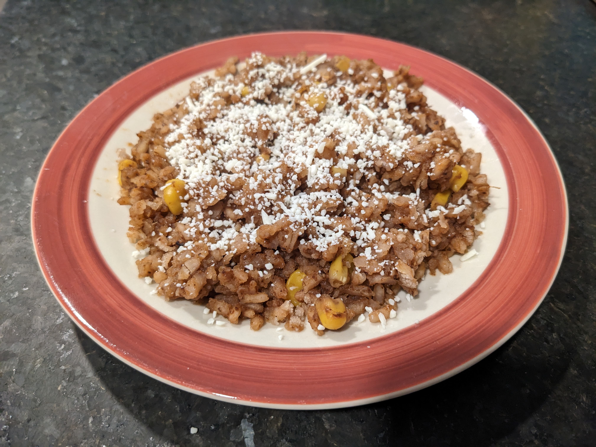

Mexican Rice

Description
Mexican rice is a tasty dish in its own right (although it does benefit from soaking
up the juices from other elements on a plate). Also known as arroz a la mexicana, arroz
mexicano, or arroze rojo, this side dish is made of white rice, tomato, garlic, and
onion with other spices and ingredients. This is my non-authentic (but hopefully tasty)
take on this classic dish.
Ingredients
- two table spoons oil
- 2 cups rice
- 1 cup tomato sauce
- 1 cup corn kernels
- 1 medium yellow onion
- 3 cloves garlic
- 4 cups chicken broth
- 1/2 cup red wine
- Cojita cheese for garnish
For the spice mix
- pinch of oregano
- 1 tsp cumin
- 1 tsp cumin seeds
- 2 tbsp chicken bullion
- 1 tsp salt
- 2 tsp chili powder
- 2 tsp ceyenne pepper powder
Directions
- Mix spices into bowl.
- Blend onion and garlic cloves in blender.
- Heat chicken broth and red wine over medium heat.
- Place oil in dutch oven over medium heat. Once warm,
add briefly rinced rice and stir evenly until medium browned.
- Add tomato sauce and mix with rice.
- Add blended onion and garlic cloves and mix.
- Add spice mix and stir in. Then cook for 1 minute.
- Add broth & wine then mix. Place lid on dutch oven and
let simmer for 10 minutes without stiring.
- Let rice finish with stove off.
- Serve with a sprinkle of cojita cheese.
Home Page